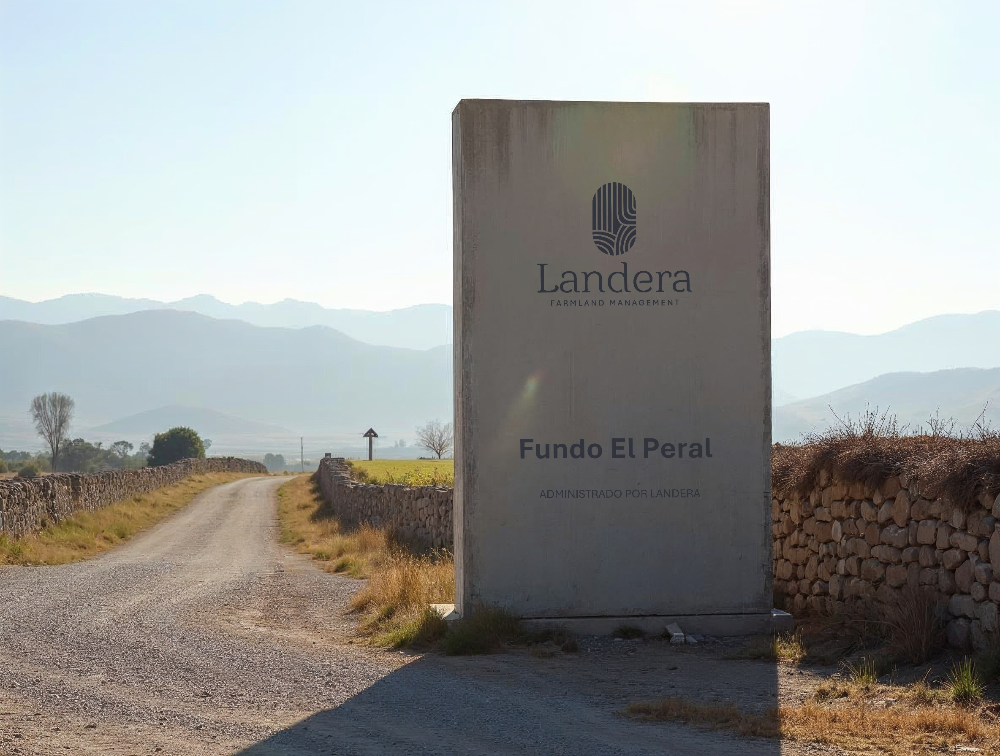
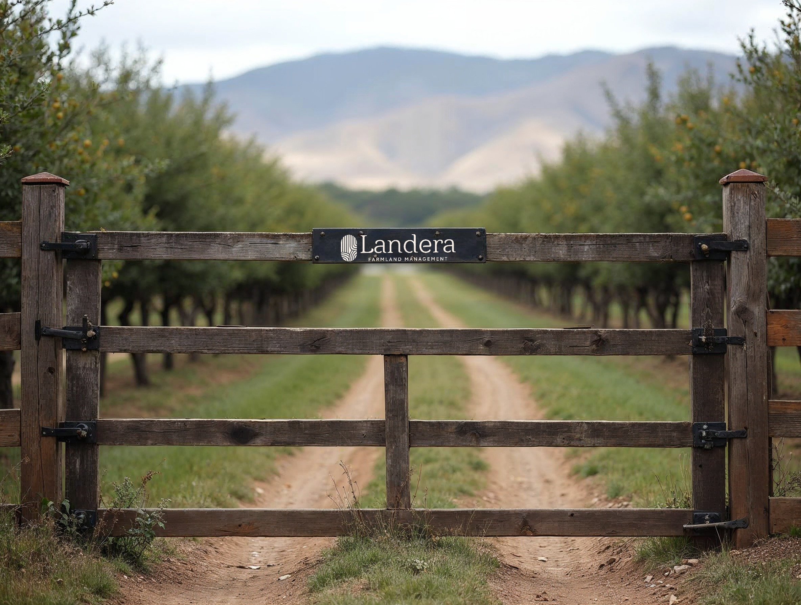
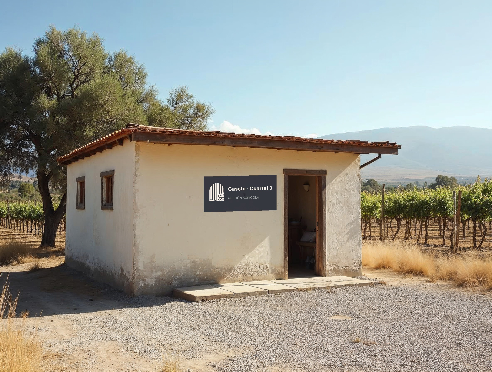
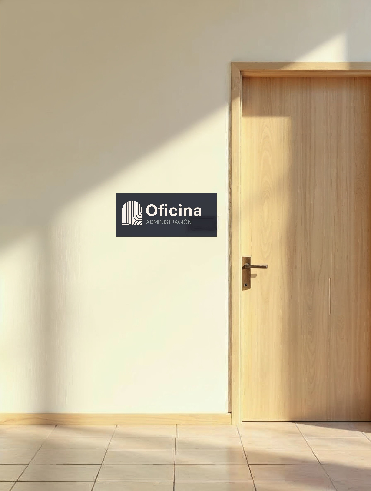

Bodega →
← Oficina
Señalética corporativa: la marca en el material, no sobre él
Materialidad
En terreno la marca se pinta, se graba o se corta: en hormigón, madera, acero. Nunca se pega impresa sobre una placa genérica.
Los soportes
Tótem de acceso — hormigón a la vista, logotipo vertical pintado en tinta, nombre del predio debajo. Lectura a 30 m: versal 8 cm.
Placa de portón — acero esmaltado en tinta atornillado a la viga, logotipo horizontal en crema. Lectura a 10 m.
Caseta y oficina — placa de tinta junto a la puerta: isotipo + función. Lectura a 3 m: versal 1,5 cm.
Direccional — tablas de madera pintadas crema o tinta, sólo texto y flecha: la marca ya está en el acceso.
Las reglas que no cambian
Versal de 1 cm por cada 4 m · panel ancho: horizontal; panel alto: vertical; sobre 15 m sólo isotipo · franja sólo si supera 1 m · el predio según la lámina 39.

Tótem de acceso · hormigón · 240 × 90 cmLogotipo vertical pintado en tinta a 60 cm de alto · nombre del predio en Bold · sin panel, sin franja

Placa de portón · acero esmaltado · 60 × 12 cmTinta con logotipo crema en vinilo de corte, atornillada a la viga

Caseta · 40 × 20 cmIsotipo + función + bajada

Oficina · 30 × 12 cmIsotipo + nombre + área
Direccional · madera pintadaSólo texto y flecha, sin logotipo
Invariables
Variables
⚠ Soportes de referencia generados; la marca se montó por código sobre el material — la obra real se aprueba sobre muestra
35 · Terreno
Landera · Manual de marca